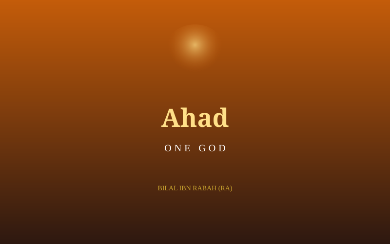

Bilal ibn Rabah (RA)
One word, repeated under a boulder in the desert sun, that history has never forgotten.

An Enslaved Believer
Bilal ibn Rabah was an Abyssinian man enslaved by Umayyah ibn Khalaf, one of Makkah's most hostile opponents of Islam. When Bilal (RA) accepted the new faith, Umayyah was determined to break his resolve and force him to recant, using methods designed to inflict maximum suffering on a man with no clan to protect him.
The Burning Sand
During the hottest hours of the day, Umayyah had Bilal (RA) dragged out into the open desert, laid on the scorching sand, and a massive boulder placed upon his chest — heavy enough to make breathing agony. He was told he would be released the moment he renounced Muhammad ﷺ and worshipped the idols of Quraysh instead. Bilal's (RA) only response, repeated again and again through the pain, was a single word affirming Allah's oneness.
"Ahad! Ahad!" — "One! One!" — Bilal ibn Rabah (RA), under torture
No threat and no pain could draw a different word from him. His endurance became legendary even among his own tormentors, who continued the torture day after day, unable to break what they could not understand.
Bought Into Freedom
Abu Bakr (RA) witnessed Bilal's suffering and negotiated to purchase him from Umayyah at a high price, then immediately freed him. Released from both slavery and torture in a single act, Bilal (RA) became one of the most devoted companions of the Prophet ﷺ.
The First Voice of the Adhan
Years later, when the Muslim community had grown and migrated to Madinah, it was Bilal (RA) whom the Prophet ﷺ chose to give the very first call to prayer in Islamic history — his powerful voice becoming the sound that has summoned Muslims to prayer in every generation since.
- Tortured on burning sand under a boulder for refusing to renounce Islam.
- Freed from slavery when Abu Bakr (RA) purchased and liberated him.
- Became Islam's first muezzin, calling the very first Adhan in Madinah.
Continue the Archive
Read the story of Khabbab ibn al-Aratt (RA), a blacksmith burned by his own master for his faith.
Read Khabbab's Story →